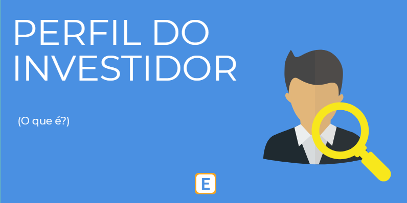

Foto Meramente Ilustrativa
Explicando Cada Tipo
É importante saber o seu perfil investidor pois assim sabera a melhor forma de investir dentro das
suas necessidades.
Tipos de perfis investidor:
- Conservador:
- Menos riscos;
- Ganhos a longo prazo;
- Normalmente optam por investir em renda fixo, Come CDB's e o Tesouro direto
- Indicado para iniciantes.
- Moderado:
- Pequenos riscos;
- Busca uma maior rentabilidade;
- Investe normalmente em fundos imobiliários e algumas ações, mas também Jaixa parte dos seus investimentos na renda fixa, diversificando o investimento.
- Arrojado:
- Sem medo de riscos;
- Experiência como investidor;
- Disposto a perder dinheiro mas obvio que em busca de uma grande rentabilidade;
- Possui grande potrimônio;
- Investe somente em renda variável.
Após todo esse estudo,
partiu Investir?